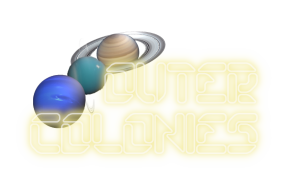

Baue deine Kolonie am Rand des Lichts.
Outer Colonies ist ein browserbasiertes Online-Sammelkartenspiel im Sonnensystem des 23. Jahrhunderts. Keine Warp-Antriebe, keine fremden Zivilisationen, keine Wundermaschinen – nur Physik, Wasser, Metalle und Lichtgeschwindigkeit. Du übernimmst eine junge Kolonie: stellst dein Deck aus Rümpfen, Waffen und Infrastruktur zusammen, fliegst Missionen und Überfälle und führst Gefechte über bis zu vier Reichweiten-Phasen.
Das Sonnensystem, 2250: Vier Mächte ringen um Ordnung, Geld und Aufmerksamkeit – und am Rand des Lichts bauen hunderte junge Kolonien an ihrer Zukunft.
Mehr über die WeltWas du nicht selbst baust, gehört dir nicht. Was du nicht verteidigst, gehört bald jemand anderem. Baue auf.
Jetzt mitspielen